V následujícím týdnu očekávám spoustu společenských akcí, a tak jsem si řekla, že bych se konečně měla dokopat k sepsání všech blogových restů, než se mi nakupí další :-)…Jako první jsem si vybrala možná ten úplně nejkrásnější a také nejpestřejší prázdninový týden, strávený v severní Itálii. Ano, chci se v tomhle pseudobabím létu zahřát alespoň fotkami a vzpomínkami O:-)…
Do Itálie jsem se chtěla podívat už z toho důvodu, že jsem se dva roky učila italštinu, a navíc můj čerstvě odpromovaný brašule získal práci v neurobiologickém vědeckém výzkumu v malebném severoitalském městečku s názvem Rovereto. Shodou okolností se letos do stejné oblasti chystala na dovolenou i Péťova rodina, takže jsme se rozhodli, že pár dnů strávíme s nimi u moře a pak pojedeme za bráchou do vnitrozemí. Tato volba se ukázala být tou nejlepší možnou, protože jsme si tak vychutnali všechno, co k správným prázdninám patří - ráchání v moři, kešování, trochu těch památek a taky nádhernou horskou přírodu.
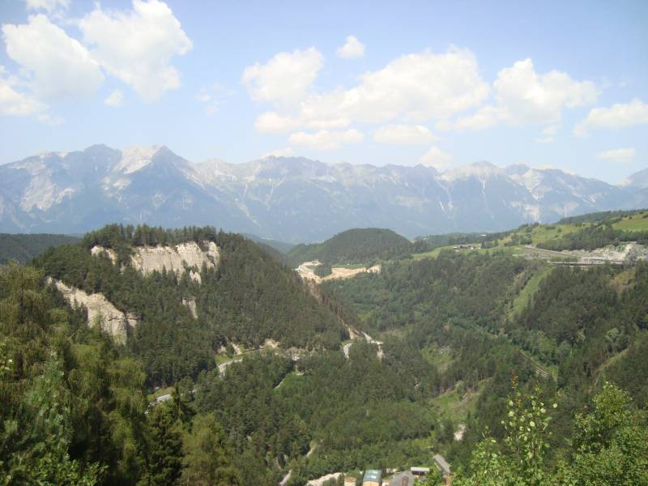
Poprvé v životě vidím Alpy :-)…
Prvních pár dnů jsme tedy trávili v malém turistickém letovisku Rosolina Mare (možná si ho někdo bude pamatovat z letošních reprízovaných Her bez hranic ;)), kde jsme si dosyta užívali sluníčko, moře i výbornou italskou zmrzlinu O.-) ! Pro mě to byl první pobyt u moře po nějakých sedmi letech, takže jsem byla jaksepatří nadšená a cachtala jsem se ve vlnách jako malé dítě společně s modrým nafukovacím balónkem, který jsme překřtili na “Kulihráška” :D.
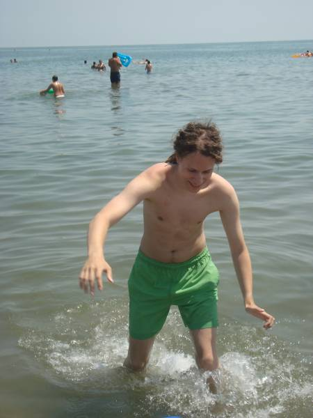
Péťa honí Kulihráška :D
I přes mé nehrané nadšení ale rozhodně nepatřím k plážovým povalečům a mám na dovolené ráda i nějakou tu akci. Sotva jsme tedy prochodili městečko a odlovili všechny kešky, už jsme v Rosolinu neměli stání a těšili jsme se na další místa, která jsme měli v plánu navštívit. Zjistili jsme si tedy vlakové spoje a vydali jsme se na cestu za brašulou do Rovereta - s tím, že si ještě po cestě uděláme celodenní zastávku v Benátkách.
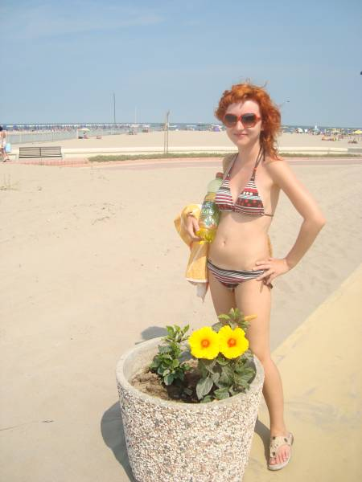
Pod italským nebem
Benátky jsou opravdu nádherné a zajímavé město a stojí určitě za víc, než pouhý jeden den. My jsme ale bohužel neměli víc času a snažili jsme se navštívit zde jak ty klasické pamětihodnosti, tak i zapadlá místa, která běžný turista může opomenout. Z toho důvodu jsme si hned po příjezdu zakoupili mapku města, což byl, jak se později ukázalo, výborný nápad - bez ní bychom se ve spletitých benátských uličkách ztratili raz dva.
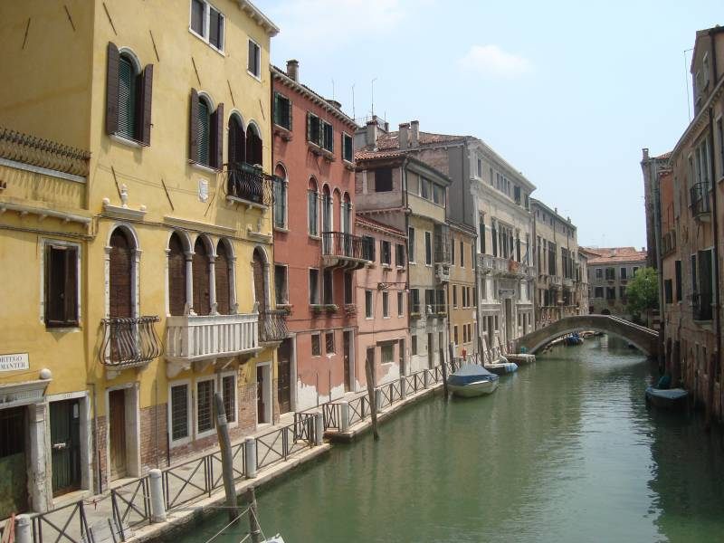
Benátská zákoutí
Hlavní turistické atrakce - Ponte di Rialto a Piazza San Marco - se nachází na trase, která je výborně značena na každém rohu. My jsme ale zatoužili i po benátských keškách a nějakém tom dobrodružství a musím říct, že jsme se dočkali ten den obojího :-). Jako první jsme se vydali hledat Snail tower (jak se to řekne italsky vážně netuším :D), trochu zchátralou, ale velice zajímavou a turistickým očím skrytou stavbu s točitým schodištěm. Když jsme se u ní dostatečně pokochali a vyfotili, pustili jsme se na výpravu po dalších místních keškách, kterou jsme měli zakončit u budovy vlakového nádraží.

Byli jsme ten den opravdu úspěšní (a to jindy míváme v geocachingu docela smůlu :D !) a obzvlášť já měla ten den na hledání čuch :D. První keš, u které jsme se zasekli, nám jako bonus přinesla i nové kamarády :-). U Ponte dell Accademia to zrovna moc nevonělo a jako na potvoru keš nikde. Pod mostem jsme ale narazili na jakéhosi mladíka a hned nám bylo jasné, že je to kolega. Ani on nebyl o moc úspěšnější, pod mostem prý objevil jen nějakou igelitku, do které si kdosi ukryl deštníky :D…Nahoře na mostě ho čekala a navigovala jeho přítelkyně, tak jsme se dali do řeči a dozvěděli jsme se, že mladý pár je z Belgie, objel velkou část Evropy a teď už se vrací domů. Při pohledu zhora se mi náhle rozbřesklo a zahlédla jsem černou krabičku - no, a keš byla na světě! Po tomto úspěchu jsme se rozhodli, že se vydáme po dalších keškách pátrat společně. Při našem putování se nám podařilo zahlédnout pravé a nefalšované benátské klišé - zpívajícího gondoliéra O:-) !!! Po dalších dvou keškách se ale naše cesty rozešly, popřáli jsme si s Belgičanama hodně štěstí a dál pokračovali sami…a vzápětí jsme se ztratili :D! Ani mapa nám tentokrát neposkytla vodítko, tak jsme se vrátili k jakémusi chrámu, kde se procházela místní policie, a nechali jsme si poradit :-). To už se nezadržitelně blížil čas odjezdu našeho vlaku do Verony. Na nádraží jsme byli zpočátku trochu zmatení, protože na tabuli se pořád ne a ne objevit náš spoj. Další neznámou pro nás byly jízdenky, které se musely označit ještě před nástupem do vlaku - jako u nás v šalině :-). Když jsme navíc konečně uviděli náš vláček - luxusní klimatizovaný vagón, který by si nezadal s našim pendolínem, říkali jsme si, že to bude asi nějaký omyl.
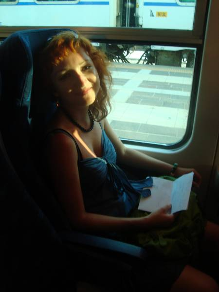
Vlak do Verony…dobrodružství začíná :-)
A ani tím dnešní dobrodružství ještě nekončilo. Ve Veroně jsme měli přestoupit na druhý spoj, který už nás měl dovézt až do Rovereta. Problém ovšem byl v tom, že na přestup jsme měli pouhých 8 minut a ještě ke všemu jsme vůbec nevěděli, jakou cílovou stanici ten vlak má mít, čili jakým směrem pojedeme…No, měli jsme z toho trochu nervy :D…Během cesty nás naštěstí uklidnil telefonát od brašule. Zjistil, že kdyby nám náhodou spoj ve Veroně ujel, brzo pojede další, a musíme nastoupit do vlaku mířícího na Bolzano. S těmito informacemi jsme byli hned klidnější a možná i proto jsme přestup ve Veroně bravurně zvládli v mnohem kratším časovém limitu, než jaký nám byl vyměřen. Po nástupu do správného spoje jsem pak poprvé za svůj život využila znalostí z kurzů italštiny a nejblíž sedící slečny jsem se konverzačně optala, zda skutečně jedeme na Rovereto. Slečna sice nevěděla, ale jakýsi mladík nám to potvrdil, a tak jsme s klidným srdcem usedli a nechali se unášet tmou za dalším dobrodružstvím :-).
Na roveretském nádraží jsme se šťastně shledali s bráchou a vydali se na cestu do našeho nového domova. Luk nám během cesty stačil sdělit všechny důležité informace o tom, kde si můžeme nakoupit, kam se máme jít najíst, kde pracuje on i co v Roveretu a blízkém okolí můžeme podniknout. Z jeho bytečku jsem byla jaksepatří nadšená, ale sotva jsem si ho stačila pořádně prohlédnout, dopadla na mě únava po dlouhém a náročném dni, a tak jsme to brzy zabalili a šli se pořádně vyspat na další dobrodružství :-)…
Na druhý den jsme se s Péťou hned vrhli na prohlídku Rovereta a první kešky :-). Teprve teď, za denního světla, jsme se mohli náležitě pokochat krásou malebného městečka obklopeného ze všech stran horami. Protože jsme se vykopali z postele až kolem poledne, sluníčko nás hned na uvítanou začalo pěkně připíkat, takže jsme se nejprve uchýlili do stínu místního Muzea umění, které se nachází hned vedle budovy Lukovy laboratoře.
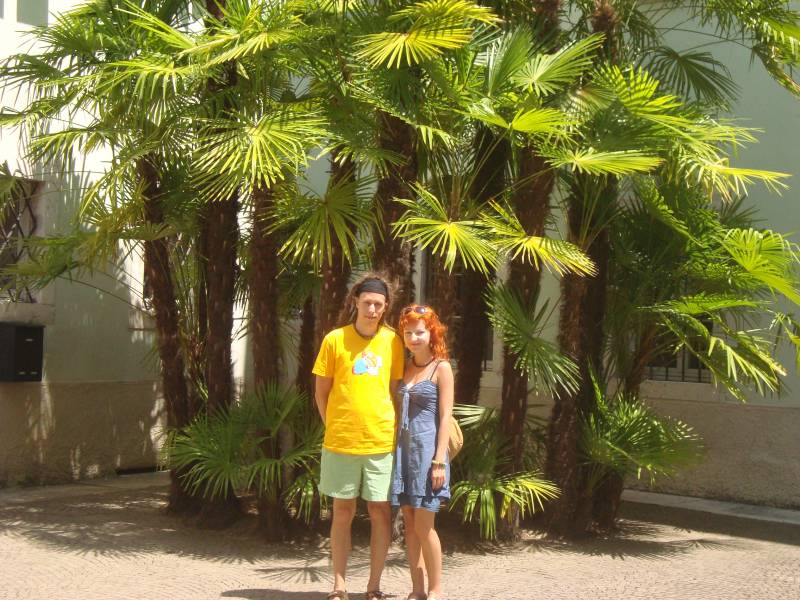
V palmovém háji
V kešování jsme tentokrát moc úspěšní nebyli, tak jsme si šli spravit náladu alespoň báječnou zmrzlinou, kterou tu měli snad ještě lepší než v Rosolina Mare :-) ! Usoudili jsme, že na nějaké velké procházení je teď moc velké hic, navíc ve všech obchodech siesta, a proto jsme se zastavili jen na informacích pro mapku města a jízdní řád do Rivo della Garda, kam jsme chtěli vyrazit hned následující den, a vydali se domů uklohnit si něco k jídlu.
Co se mi v Roveretu opravdu moc líbilo, byly malé fontánky nacházející se na každém rohu. V těch parných letních dnech to byl opravdu ten nejlepší možný zdroj osvěžení. Rozhodli jsme se inspirovat se Italy a po obědě jsme striktně dodrželi siestu :D…Když jsme se probudili :D, usoudili jsme, že je nejvyšší čas zase vyrazit za novými zážitky. Ukořistili jsme mapku, zásoby pití a vydali jsme se na cestu na Ossario di Castel Dante, kruhovitou stavbu tyčící se nad Roveretem, od které vedla naučná stezka ke zvonu Campana dei caduti, místní památce na druhou světovou válku. Každý panel naučné stezky byl věnován nějakému významnému mírovému aktivistovi. Kešování nás po cestě strašně zdrželo, a tak nás na stezce málem zastihla tma (což při průchodu lesíkem bez baterky nebylo zrovna dvakrát příjemné :D). Na druhou stranu se nám ale z výšky naskytl nádherný pohled na noční Rovereto.
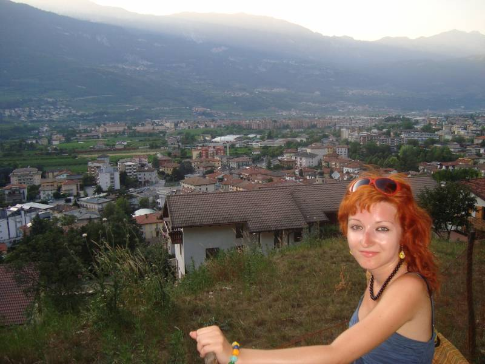
Rovereto na dlani
Vrátili jsme se domů dost pozdě, takže jsme usoudili, že chladící se vínko, které jsme v poledne koupili za rohem v místním obchodě COOP (který brašule trefně překřtil na “Jednotu” :DDD…), si necháme na zítra, a šli jsme čerpat síly na výlet k Lago di Garda :-)…
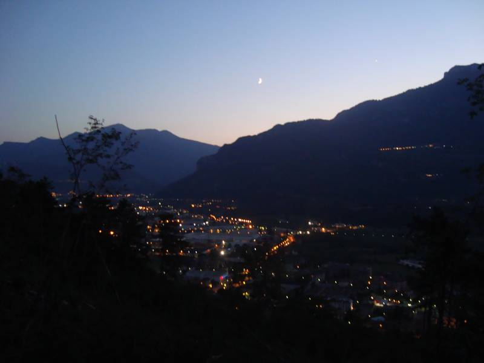
Noční Rovereto
Druhého dne jsme se tedy vypravili na jedno z pravděpodobně nejkrásnějších míst na zeměkouli :-) - italská karosa :D nás vyplivla v městečku Rivo dela Garda a my jsme se s GPSkou vydali najít ten slavný ráj na zemi. Palmičky lemující cestu k pláži nás ujistily v tom, že jsme tu správně :-). Pohled, který se nám naskytl na břehu jezera, vůbec není možné vyjádřit slovy. Na nebi azůro, průzračně čistá voda, do které háže sluníčko třpytivé odlesky a všude kolem zeleň a hory…
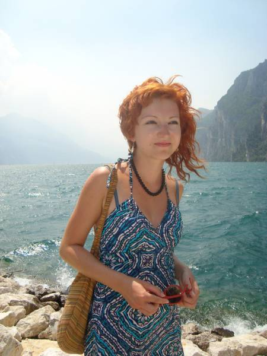
Lago di Garda - ráj na zemi o:)
Nemohla jsem se dočkat, až se v Lagu trochu ochladím. Plavky jsem si s sebou nebrala, ale k mému překvapení měla voda přes dvacet stupňů, takže jsem se šla ráchat do vlnek i v šatech a celou dobu se bavila sbíráním barevných kamínků (jeden červený jsem si odnesla, ale nakonec jsem ho na druhý den vložila do roveretské kešky :-)…). Díky příznivému větru je Lago rájem surfařů a díky nádherné krajině pravděpodobně i oblíbeným italským letoviskem, soudě podle zaplněné pláže.

Den u Laga jsme opět zaplnili kešováním, nakupováním pohledů a nakonec i nějakým tím občerstvením :-). Ochutnali jsme i místní zmrzlinu, ale ta roveretská byla suverénně nejlepší :D! Závěr výletu nám trošku zkazil náladu, protože jsme díky špatnému značení čekali na zpáteční bus na špatné straně ulice a díky tomu nám ujel doslova před nosem :(. Na další spoj jsme museli čekat hodinu. Naštěstí jsem byla vybavena Robertem Fulghumem, takže jsem to nebrala moc tragicky :-)…
V Roveretu jsme se šli ještě podívat k místnímu hradu, který se ale zrovna opravoval, a nafotili jsme cestou spoustu smínků spletitých uliček v historickém centru. Po cestě domů jsme pak narazili na koncert odehrávající se přímo na náměstí, tak jsme se rozhodli završit dnešní den i trochou kultury a dobrou hodinku jsme tam poseděli. Pak už jsme ale zamířili domů za Lukem a za vínkem a olivama :D ! Na balkónku jsme si udělali pěkné posezení a kecali až dokud nedošlo víno, ehm :D…
No a už tu byl najednou poslední den dovolené, konec našeho italského dobrodružství :(. Rozhodli jsme se, že ho strávíme procházkou k řece, a po cestě ulovíme posledních pár keškových exponátů a nakoupíme pohledy :).
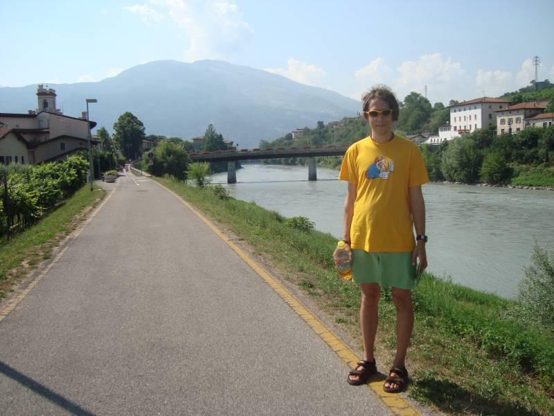
Kešování u řeky
Kolem řeky je vybudovaná skvělá cyklostezka, po které se dá údajně dojet až k Lagu. Sluníčko opět připalovalo, takže jsme byli vděční za každý stín, kterých po cestě pravda mnoho nebylo :-)…V poledne jsme si dali sraz s brašulou u hlavního náměstí, protože jsme byli domluvení, že si spolu zajdeme někam na oběd. Objednali jsme si jen tousty, ale byly tak obří a tak bohatě obložené, že se nedaly vůbec sníst…opět jsme nacpaní k prasknutí zatoužili po siestě :D. S brašulou jsme se pak už rozloučili, protože se vydal zpátky do práce, a šli jsme pomalu balit :-)…
Na závěr je nutné zmínit, že po celou dobu nám v Itálii ani jednou nezapršelo, ale sotva jsme se vydali na zpáteční cestu, přihnal se liják a vytrvale a hustě lilo celou dobu až domů. A u nás jsme pak ještě rádi vzpomínali na ta příšerná vedra :D !!! Prázdniny v Itálii se zkrátka po všech směrech vyvedly. Zažili jsme spoustu dobrodružství, odlovili spoustu kešek, podívali se na řadu zajímavých míst a užili si prostě to nejlepší, co ke správným prázdninám patří…a tak to má být :-) !
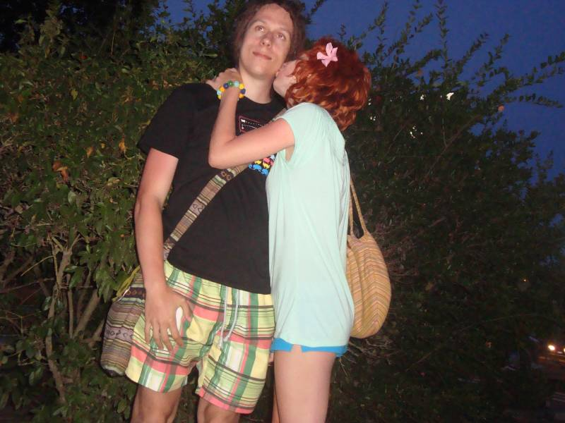
:*
Tý jo, jak sis to mohla tak všechno pamatovat? To sis snad dělala poznámky, ne? :-)
Příjemné čtení takhle na začátku podzimu…